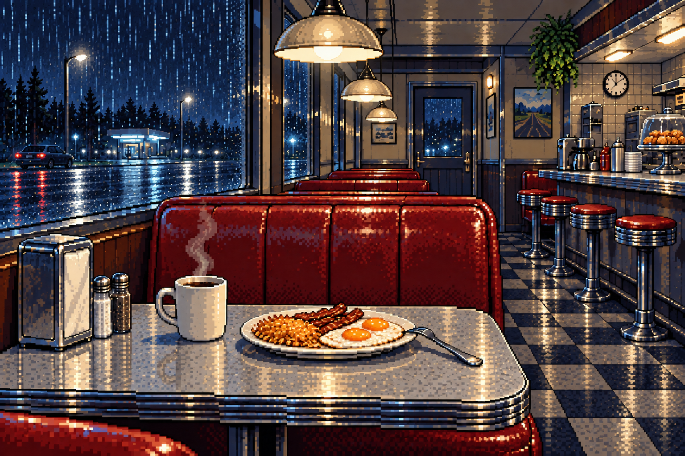

THE LONG WAY HOME · PHASE 1
Things happen while you do things.
Development scene lab, not the release game. These two scenes use a separate test save. Your build #104 journey is not changed.
Choose an interaction to test
These are manual test entry points. Natural road-event integration is the next milestone.
